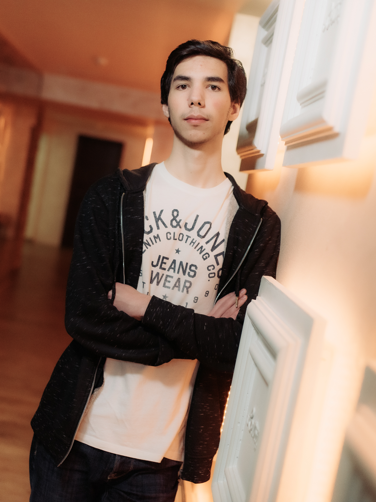

Dragoș Popa
dragos.popa777@gmail.com

Asteptari legate de educatie
“Imi doresc sa ies din facultate altfel decat am intrat."
Discipline de aprofundat
Hobby-uri
- Jucatul de jocuri video
- Invatatul limbajelor de programare
- Modul de functionare al calculatoarelor si componentele acestora
- Plimbarile in natura
Inapoi la catalog